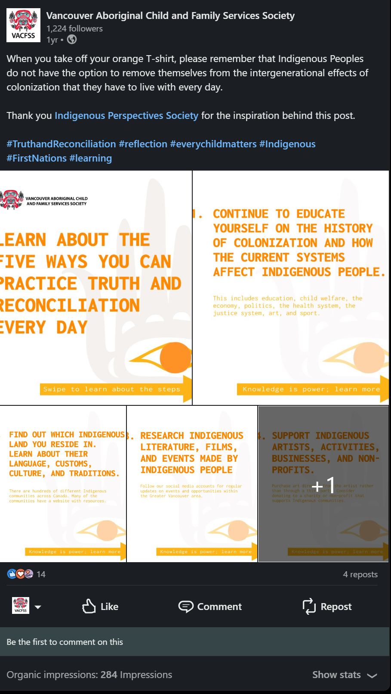
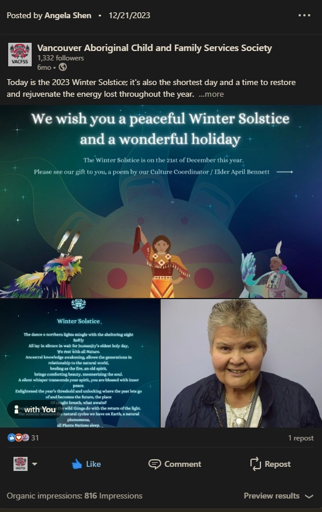

The Challenge
VACFSS — the Vancouver Aboriginal Child and Family Services Society — needed to recruit specialized social workers, caregivers, and support staff from a limited talent pool. As an Indigenous-serving nonprofit, the organization competes for the same candidates as larger government agencies and private firms, but with a fraction of the marketing budget.
My role: build and run the entire recruitment marketing operation from scratch — strategy, creative, copy, media buying, and reporting — with a mandate to prove that a tight budget, used precisely, could outperform the market.
Results at a Glance
4.1M+
Campaign results in 2025 across 24 active campaigns
$0.21
Lowest CPC achieved — vs. $0.80 industry average
331%
Increase in web traffic over two years
3M
Impressions generated in a single campaign year
80K
Landing page views in one year
59K+
Facebook organic referrals driven to the website
117K
New users to vacfss.com in 2025
$15K
Annual paid media budget managed end-to-end
Beating the Industry Benchmark
The average cost-per-click (CPC) on Meta Ads across industries sits at $0.80. For nonprofit and social services recruitment — where audiences are specific and competition for attention is high — this benchmark is a meaningful ceiling. The campaigns I ran consistently broke through it.
A $0.21 CPC means each visit to the recruitment page cost less than a quarter. For the July Caregiver campaign alone — 855,738 link clicks for under $3,000 — that is a level of reach that most organisations at this budget tier simply do not achieve.
Why the numbers matter
Low CPC is not just an efficiency metric — it is evidence that the creative and targeting strategy is working. When an ad costs less to click, it means the audience found it relevant enough to act. That relevance comes from the combination of strong visual design, precise audience segmentation, and copy that speaks directly to the people VACFSS needs to reach.
Every dollar saved on CPC is a dollar that extends the campaign's reach without increasing the budget — compounding the impact of a constrained spend.
2025 Campaign Performance
24 campaigns managed simultaneously across Meta's full placement suite — Feeds, Reels, Stories, and Search. $15,299 total spend. 4.1 million results.

2025 Meta Ads Manager — 4,157,445 total results across 24 campaigns on a $15,299 budget
2024 Campaign Performance
The year prior established the foundation: 2.5M+ results on $12,396 — a benchmark that the 2025 campaigns then surpassed by 60% without a proportional increase in budget.

2024 Meta Ads Manager — 2,591,800 results across 24 campaigns on a $12,396 budget
Creative Strategy
I owned the complete creative pipeline: concept, design, copy, and placement optimisation. Every ad was designed to work across Meta's three primary placement formats simultaneously — Feed (1:1 and horizontal), Stories and Reels (9:16 vertical), and Right Column search results — without losing visual clarity or message hierarchy at any size.

Multi-format ad creative — designed for simultaneous deployment across Feeds, Stories/Reels, and Search column placements
Audience Targeting
Campaigns were segmented by role type — caregiver, social worker, administrative — with tailored creative and copy for each. Retargeting pools were built from website visitors and video viewers to capture candidates who had shown intent but not yet applied.
A/B Testing
Ad sets ran continuous creative tests — varying imagery, headline framing, and CTA language. Performance data was fed back into the design process: what clicked (literally) informed the next iteration. This loop is what drove CPC below $0.25 on the best-performing campaigns.
Organic Reach & Web Traffic
Paid media drove discovery, but a parallel organic content strategy ensured that brand value compounded beyond the ad budget. LinkedIn and Facebook posts — timed around community events and cultural moments — built the kind of trust that a recruitment ad cannot buy outright.

Organic LinkedIn content — Truth and Reconciliation post, 284 impressions

Winter Solstice card shared on LinkedIn — community-facing brand moment
The combined effect of paid and organic: Facebook alone drove 59,000+ referral visits to vacfss.com — 31K from mobile and 28K from the Facebook platform directly — proof that the social presence had built genuine audience interest beyond the ad placements.

Google Analytics traffic sources — 31K + 28K Facebook referral users, on top of organic search traffic

Google Analytics 2025 — 67K active users, 117K new users. "Become a Caregiver" ranked #1 with 46K views and 141K events
The Work Behind the Numbers
Effective recruitment marketing for an Indigenous services organisation is not just a performance media problem — it requires cultural fluency in every touchpoint. The campaigns needed to communicate safety, purpose, and community belonging to an audience that is rightly cautious about institutional messaging.
.png)
.png)
.png)
.png)
Community events I photographed and coordinated — imagery used across recruitment campaigns to show authentic organizational culture
I photographed and coordinated over 200+ attendee events across two years. That photography directly fed the ad creative library — authentic imagery of real community life, not stock photos, which is a significant part of why the ads performed: people recognized the cultural context as genuine.
What this demonstrates
The numbers — $0.21 CPC, 4M+ results, 331% traffic growth — are evidence of a specific skill set: the ability to translate cultural understanding into creative decisions, and creative decisions into measurable media performance.
A low CPC is not luck. It comes from designing ads that the right people actually want to click — which requires knowing who those people are, what matters to them, and how to speak to that in a single image and headline. That is the work.